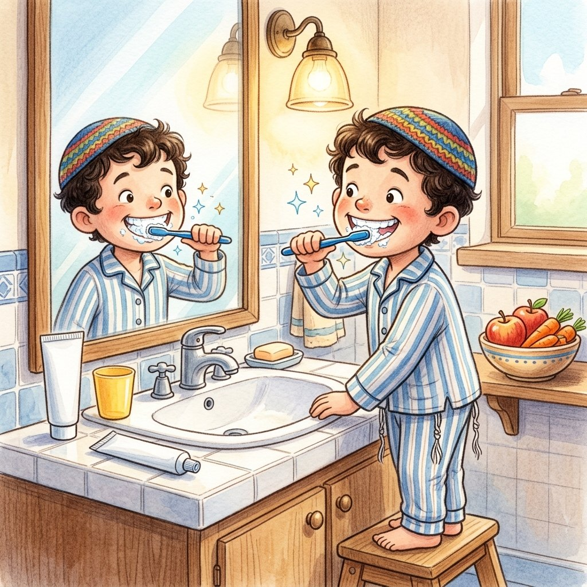

בריא לדעת
בריאות השיניים - למה זה כל כך חשוב?
על הפרק: למה חשוב כל כך לצחצח שיניים? מה עושים החיידקים שבפה, איך השיניים משפיעות על הבריאות של כל הגוף, ואילו הרגלים קטנים שומרים על חיוך בריא לאורך שנים.
0:00
--:--
לא הצלחנו לטעון את ההקלטה. בדקו את החיבור לאינטרנט ונסו שוב.